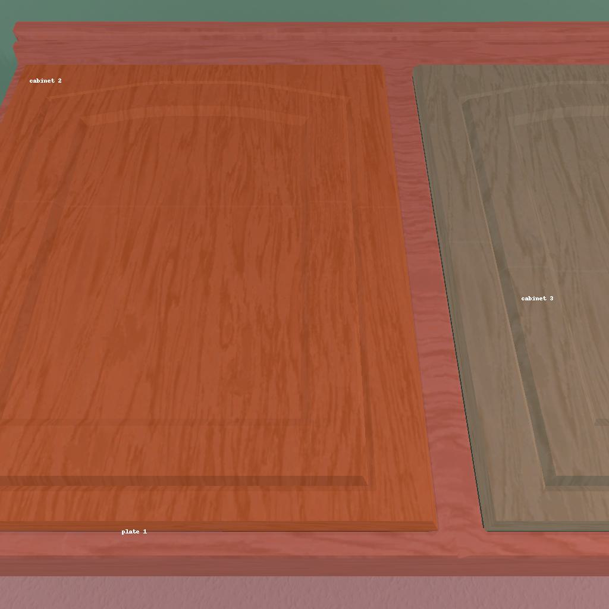

---------------------------------------------------------task: 23---------------------------------------------------------
--------------------------------------------------------------------------------------------------------------------------------------------------------------------
--------------------------------------------------------------------------------------------------------------------------------------------------------------------
Step:--------------------------------------------------------------------------4-------------------------------------------------------------------------------
----------------------------------------
VLM Prompt:
Image1:
**Instruction**
1. Analyze the provided image to identify all visible household objects, focusing on those relevant to the task description "put a hot mug in coffeemachine."
2. Use the analysis of the image and the task hint "The agent must find an object of the desired type, pick it up, go to a microwave, heat the object with the microwave, then find the correct location to place it, and put it down there. The agent does not need to use the microwave button or open the microwave to heat the object, and the agent just needs to do action that is "heat the object with the microwave"." to answer the question: what is the most reasonable action in the choices for the task description "put a hot mug in coffeemachine"?
4. Decide and write the answer using the template: The answer is: (i): , where i is the real number. If there is no desired object in the image, search every place based on **Initial Observation** to find the object. And if no one is exactly correct, choose a similar answer.
**Initial Observation**
You are in the middle of a room. Looking quickly around you, you can see cabinet (1-15), fridge (1), countertop (1-4), drawer (1-4), microwave (1), toaster (1), coffeemachine (1), garbagecan (1), sink (1), stoveburner (1-3), sinkbasin (1)
**Answer Choices**
(1): go to fridge 1
(2): go to countertop 1
(3): go to cabinet 4
(4): go to cabinet 5
(5): go to cabinet 6
(6): go to cabinet 7
(7): go to drawer 1
(8): go to drawer 2
(9): go to cabinet 8
(10): go to drawer 3
(11): go to cabinet 9
(12): go to cabinet 10
(13): go to drawer 4
(14): go to microwave 1
(15): go to cabinet 11
(16): go to toaster 1
(17): go to cabinet 12
(18): go to cabinet 13
(19): go to cabinet 14
(20): go to cabinet 15
(21): go to countertop 2
(22): go to coffeemachine 1
(23): go to garbagecan 1
(24): go to countertop 3
(25): go to countertop 4
(26): go to sink 1
(27): go to stoveburner 1
(28): go to stoveburner 2
(29): go to stoveburner 3
(30): go to sinkbasin 1
(31): open cabinet 2
(32): close cabinet 2
(33): examine cabinet 2
**Answer**
Let's think step by step by following the instructions.
----------------------------------------
----------------------------------------
Original Response:
The task is to "put a hot mug in coffeemachine." This implies that the agent must first find a mug, heat it up, and then place it in the coffeemachine.
Analyzing the image, we can see two cabinets labeled "cabinet 2" and "cabinet 3," and a plate on the countertop labeled "plate 1." There are no visible mugs, microwaves, or coffeemachines in this image. Therefore, we must search based on the Initial Observation.
Based on the Initial Observation, the agent must find a mug first. Mugs are typically stored in cabinets or on countertops near a coffeemachine. Since the image doesn't show a coffeemachine, and the most common location for mugs is in a cabinet, the most reasonable next action would be to search a cabinet.
From the answer choices, we do not have the option to search cabinet 2 or cabinet 3, which are the ones visible in the image. The next best option is to choose a cabinet closest to the coffeemachine based on standard kitchen layouts. Without specific information on the layout, it's a guess, but a common placement for a coffeemachine would be on a countertop near cabinets where mugs would be stored.
The answer is: (11): go to cabinet 9, which is a guess based on typical kitchen organization, as it is the first cabinet option after the ones visible in the image. If a mug is not found in cabinet 9, the agent should continue searching the cabinets based on the initial observation list.
----------------------------------------
----------------------------------------
>>> Refine Original VLM Response and Get Pure Action: go to cabinet 9, which is a guess based on typical kitchen organization, as it is the first cabinet option after the ones visible in the image
----------------------------------------
-----------------------------------------------------------------
Running time: 17.734468936920166 seconds
Total Money: 8.141730000000006
-----------------------------------------------------------------
-----------------------------------------------------------------
Text Observation:Nothing happens.
-----------------------------------------------------------------
UNSUCCEED